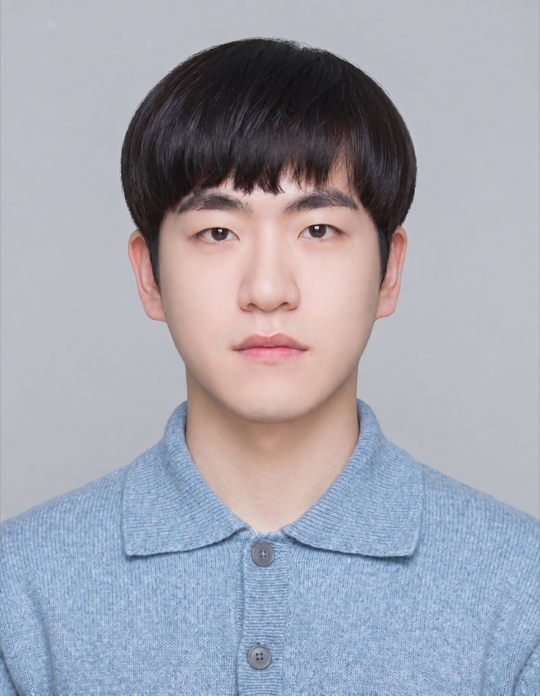

Kyungwon Cho
MS/PhD Student @ Seoul National University
I am a first-year MS/PhD student at SNU Visual Computing Lab, advised by Prof. Hanbyul Joo. I'm interested in computer vision and robotics. My research focuses on egocentric vision, human motion, human-robot interaction, and world models.

News
- Sep 2026 OmniEgoCap is accepted to NeurIPS 2026!
- Aug 2026 I appeared on a JTBC Documentary featuring OmniRobotHome! [Video]
- Feb 2026 I received the Outstanding Undergraduate Thesis Award!
- Feb 2026 I received a bachelor's degree in Computer Science and Engineering from Seoul National University.
- Feb 2025 I joined SNU Visual Computing Lab!
Research
-
NeurIPS 2026
OmniEgoCap: Camera-Agnostic Sequence-Level Egocentric Motion Reconstruction
OmniEgoCap is a sequence-level diffusion framework that leverages long-range physical invariants and geometry-aware augmentation to reconstruct consistent 3D full-body motion across diverse egocentric camera setups.
-
arXiv 2026
OmniRobotHome: A Multi-Camera Home Platform for Real-Time Human-Robot Interaction
OmniRobotHome is a multi-camera home platform with 48 hardware-synchronized cameras and three manipulators that provides real-time markerless full-body human pose, 6D object pose, and anticipatory motion forecasting for safe and assistive human-robot interaction.
-
arXiv 2026
DeVI: Physics-based Dexterous Human-Object Interaction via Synthetic Video Imitation
Project Page · arXiv · Code
DeVI is a physics-based framework that imitates text-conditioned synthetic videos to learn dexterous human-object interaction, using a hybrid 3D-human and 2D-object tracking reward to achieve physically realistic, zero-shot generalizable manipulation.
Awards
- 2026 Outstanding Undergraduate Thesis Award
- 2023 SNU Semiconductor Specialized University Undergraduate Scholarship
- 2018 Gold Medal, Korea Olympiad in Informatics (KOI)